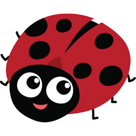
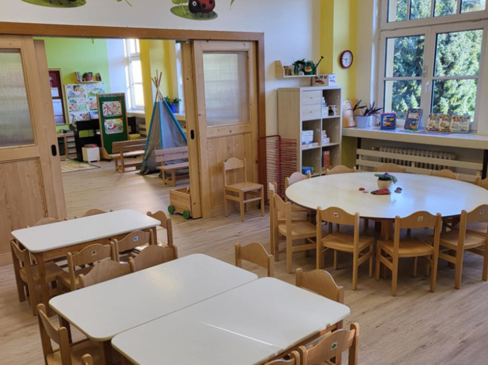
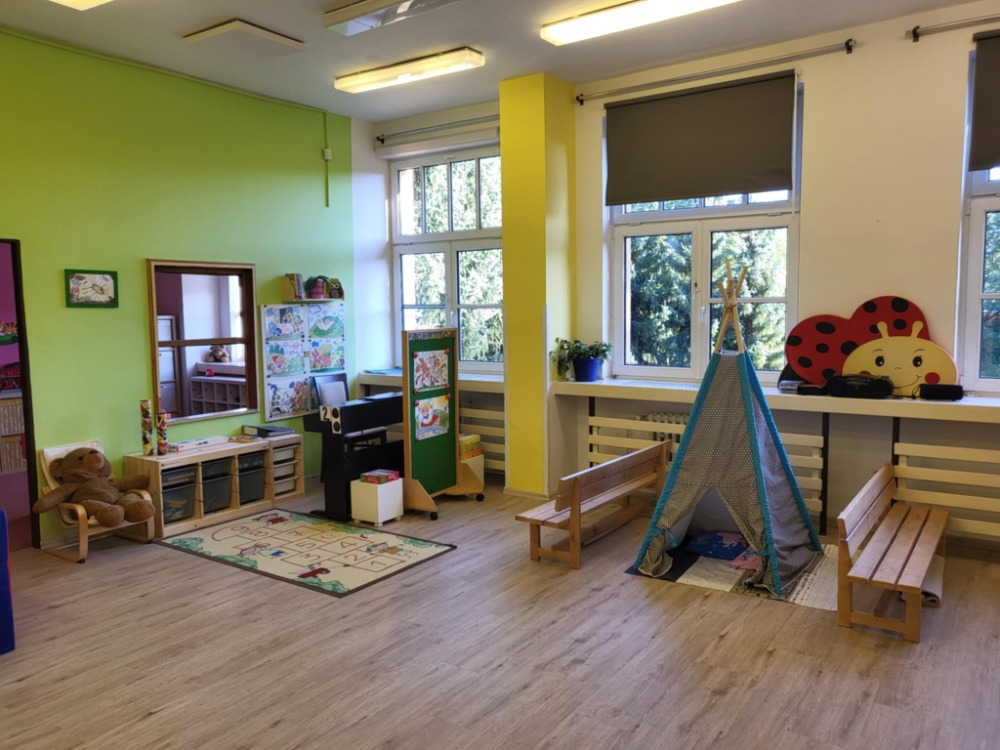

Třídní učitelky: Zdena Běhalíková, Bc. Kateřina Trnková
Asistentka pedagoga: Petra Černá
Kontakt: +420 605 530 238
Skladba třídy: V naší třídě je 26 dětí. Věkové složení třídy je od 3 let do 6 (7) let.
Provoz třídy: 6:30 – 16:30 hod.
Třída: Třída je umístěna v 1.patře pravého křídla budovy. Třída představuje jednu ze dvou tříd mateřské školy klasického typu. Je rozdělena na dvě části – prostornou hernu a třídu se stolky a židličkami. Zde mají děti prostor pro své tvořivé, námětové i pohybové aktivity. Ložničku, sloužící dětem k relaxaci na lehátku mají děti situovanou samostatně. Mají však většinou příležitost účastnit se přiměřeně relaxačních aktivit i v této době. Hojně využíváme i dalších společných prostor budovy, včetně tělocvičny a jídelny. Budovou se děti přemísťují často osobním výtahem.
Zaměření třídy: Děti si hrají a pracují pod odborným vedením zkušených pedagogů často ve skupinách. Ty se tvoří podle individuálního výběru činnosti, zájmu i stupni náročnosti zvolených aktivit. Pestrý a zábavný program respektuje závazné normy předškolního vzdělávání dané ministerstvem školství ČR a směřuje k maximálnímu rozvoji zdravého vývoje dítěte a jeho osobnosti. Důraz klademe na prožitkové učení hrou a činnostmi dětí, situační učení a spontánní sociální učení. Pravidelně se zúčastňujeme kulturních a sportovních akcí pro děti pořádaných různými zábavnými agenturami. Nadstandardně zařazujeme do programové nabídky pravidelně i školu v přírodě a s erudovanými lektory lyžařskou školu nebo hravou výuku angličtiny.

